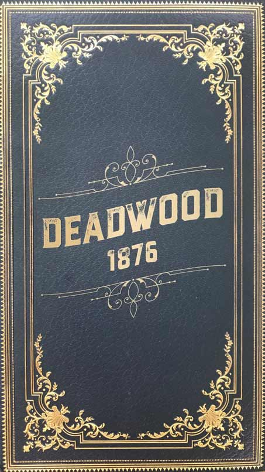
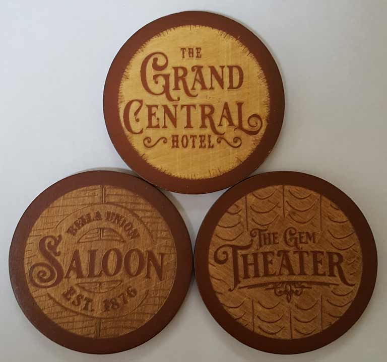
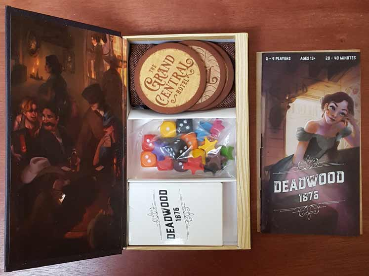
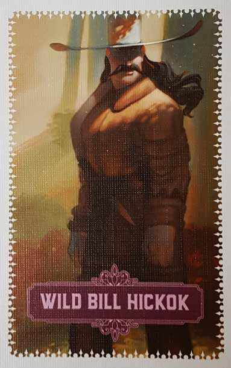
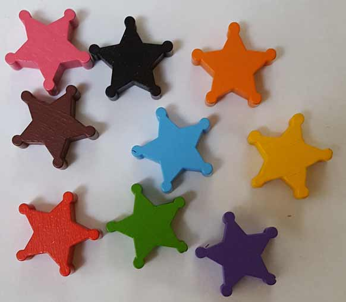
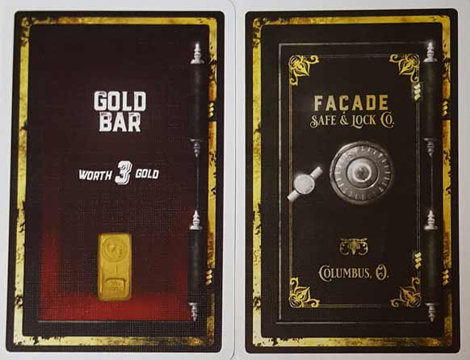
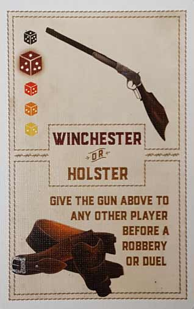
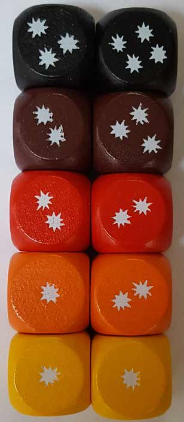
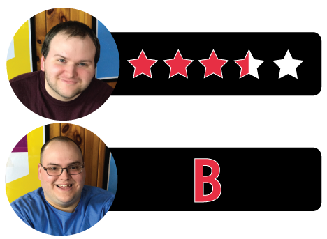

In this Deadwood 1876 review, D and Will share their thoughts on the latest entry in the Dark Cities Series from Façade Games. Designed by Travis and Holly Hancock, Deadwood 1876 has its players journeying back to the titular frontier town as they rob safes and duel in dice-rolling standoffs. In this game, players can assume the roles of legendary gunfighters like Wild Bill Hickok or figures made famous by HBO’s Deadwood, like Al Swearengen. How well does this brand new game hold up? Is it a worthy follow-up to Tortuga 1667? Find out what we think in the review(s) below.

D reviews Deadwood 1876
 (Author’s
note: this review is meant to accompany our gameplay video and will not
go in-depth on the game’s rules. If you’re interested in learning how
the game is played, please watch the video. It’s not bad.)
(Author’s
note: this review is meant to accompany our gameplay video and will not
go in-depth on the game’s rules. If you’re interested in learning how
the game is played, please watch the video. It’s not bad.)
Just like with the previous game we played from Façade Games, Tortuga 1667, I’ll be grading Deadwood 1876 with an asterisk. These games in the “Dark Cities” series are party games at their core and, like most party games, tend to favor a “the more, the merrier” sort of situation when it comes to an ideal player count. And while Deadwood, like its predecessor, supports anywhere from 2-9 players, the rulebook makes it quite clear that playing with fewer than four people will produce a somewhat different experience. Not a bad experience, mind you, but also probably not an ideal one either. We did end up playing Tortuga again with more people – I believe six or seven – and there were definitely more things to consider and deduce with more people involved. And with Deadwood, I suspect the game might be altered even more significantly depending on the number of players.
I’m not as sold on Deadwood 1876 as I was on Tortuga after our initial playthroughs. Despite appearances, the games aren’t actually all that similar. Both games involve teamwork, yes, but in very different ways. In Tortuga, you don’t know who your teammates are at the outset, but they’re on your side for the entire game. In Deadwood, you always know who your teammates are, but who they are can change at a moment’s notice. This can be frustrating and is, in my opinion, kind of silly. Thematically, it’s plausible that the privateers of Tortuga could be allies without realizing it right away. But the allegiances of Deadwood’s cast of colorful characters are based solely on which establishment they’re currently gracing with their patronage, and I’m not sure that that makes much sense at all. Regardless, I’m someone who always prefers structure and planning to chaos and aggression, so the Tortuga style is much more to my tastes.
The gameplay of Deadwood is similarly unpredictable, given the game’s reliance on dice to settle gunfights. Some people will probably love this, but if you’ve ever read one of my reviews before, you probably know that I’m no big fan of dice. I appreciate that they used custom dice in this case, and even went the extra mile to provide the math backing up the pips, but it feels inadequate for something as skill-based as marksmanship to be reduced almost purely to chance. Now, I’ll grant that sometimes sacrifices to realism need to be made in order to make a game more fun, but I don’t love the decisions made in this case. Other elements work much better, specifically all the business with the safes. These provide a good opportunity for bluffing, which feels apropos, and they also offer a nice variety of rewards that come in handy in different ways. You need gold to make it to the final round, but not having badges or extra guns at your disposal can make surviving the final round quite difficult. I also like that you have to really think about your choices, specifically because there are so few that you get to make. The main game is short – there are only four rounds before the endgame begins – and each player only gets one or two turns per round depending on the player count. As such, messing up a turn can be devastating, as can be wasting a powerful gun on one of the heists. Overall, while I have some problems with the gameplay, I still think it’s mostly pretty fun.
Unsurprisingly, the quality of all the components is quite high. While it may not have a standout component like Tortuga’s rollout map, everything is sturdy and attractive. The art, courtesy of Sarah Keele, is once again eye-catching. The legendary, real-life individuals who star in this game are all recreated in a somewhat cartoonish but recognizable manner, and I appreciate the biographies and bits of historical background that are provided in the rulebook. I sort of wish that they had made the Deadwood cards to look like old-timey playing cards, but I can forgive them this oversight because the cards are otherwise excellent.
As a matter of preference, I think I prefer Tortuga 1667 to Deadwood 1876 by a little bit, but I wouldn’t argue too hard with someone who has the opposite opinion. Part of it has to do with the design decisions I covered earlier; part of it has to do with the fact that I’ve never really had much interest in the mythos of the Old West. Give me the 17th century swashbucklers any day of the week. But this is still another quality product and game from a publisher that’s starting to build a reputation as a manufacturer of said things. If you’re a fan of their earlier games, you shouldn’t find yourself too disappointed with Deadwood 1876.
D’s Rating: Three and One-Half Stars out of Five*.
Will reviews Deadwood 1876
 With production on HBO’s Deadwood movie officially underway, it’s definitely serendipitous timing to receive Façade Games’ Deadwood 1876. We kickstarted this product months ago and have been eagerly awaiting its arrival ever since. Its predecessor, Tortuga 1667, was and remains a hit at our table, and I’m glad to report that Deadwood 1876 is similarly acclaimed. It features the same fast-moving, unpredictable, and entertaining gameplay that made Tortuga shine, but it also exhibits a few notable flaws. And these flaws, despite being relatively forgivable, render Deadwood a bit inferior to its pirate-themed sibling.
With production on HBO’s Deadwood movie officially underway, it’s definitely serendipitous timing to receive Façade Games’ Deadwood 1876. We kickstarted this product months ago and have been eagerly awaiting its arrival ever since. Its predecessor, Tortuga 1667, was and remains a hit at our table, and I’m glad to report that Deadwood 1876 is similarly acclaimed. It features the same fast-moving, unpredictable, and entertaining gameplay that made Tortuga shine, but it also exhibits a few notable flaws. And these flaws, despite being relatively forgivable, render Deadwood a bit inferior to its pirate-themed sibling.
Just like Tortuga 1667, Deadwood’s packaging and components are superb. The artwork is sharp and vivid, and the pieces are all crafted from sturdy wood. This is a colorful, striking product that’s surprisingly affordable. Façade Games is making a name for itself with its games’ build quality. Other publishers should take notice.
Also, the rulebook is very well written and clearly explains the game’s few mechanics and mechanisms. There’s not much to Deadwood’s gameplay and yet, the designers went out of their way to lay everything out in multiple ways, such as text instructions on the cards. As a result, this game is up there with the most intuitive board games that I’ve ever played. You play cards, either resolve their actions or get into gunfights, steal safes, and determine which location you want to be on when the game ends. It’s that easy.
That’s not to say there isn’t any nuance to the gameplay; there definitely is. Take the location discs for example – they determine which “team” your on in the moment. See, you want to work together if you’re sharing a location with an opponent because at the end of the game, the location with the most gold goes into the final standoff that decides the victor. Sure, you’re going to have to duel your teammate eventually, but you’ll also need them to get there. That’s quite brilliant. And what’s great is that over the course of a session, everyone playing will eventually figure out who’s collecting the most gold, or at least have a hunch. At that point, it becomes a mad dash to get to that location, and that means dueling (which determines movement) becomes extremely important – way more important than it is earlier in a session. At the same time, you want to make sure that you have some decent guns for the final standoff, which means you’ll have to decide whether to prioritize the best weapons for dueling or for the endgame. The mental struggle this causes is satisfyingly flustering, and the wrong decision can be soul-crushing.
A specific ability I like is the “holster” ability, which allows you to support anyone else’s safe when someone is trying to steal it. It’s awesome that you can basically sabotage someone else’s attempt to pilfer by providing another gun in the showdown to your teammate, or whomever else you choose. In Deadwood 1876, betrayal is the name of the game, so if you’re ready to make a move against your teammate, you can always alternatively support whomever they’re fighting. For such a simple game, holsters can lead to some intense moments of strategy. However, in two or three player games, they’re not as useful since you can only play them on your own turn. Then again, in these player counts, you can play them on your own cards, which means you could potentially utilize them to mislead your opponents. Playing a Winchester Rifle on a safe full of rats is a pretty good way to entice your enemies to a worthless safe. Overall, the holster ability is not nearly as fun in two or three player sessions, but the designers did at least give it an intriguing alternate mode of play.
Speaking of two or three player games, they’re just not as enjoyable as ones with higher players counts. This is to Deadwood’s detriment, considering a lot of people are looking for games that suit smaller groups. I mentioned earlier the mad dash at the end of the game, which is certainly fun (if not a bit chaotic), but it doesn’t really work with two or three people. In a three player game especially, it quickly becomes apparent who’s gold rich and who isn’t, and that means this game becomes a 2 on 1 scenario, which is never ideal. In that situation, all the wealthy player has to do is pick which opponent is the least well armed and ensure they’re sharing a location with that person when the game ends. And this isn’t really that difficult to do, all things considered. Then again, this is a dice-rolling game, so bad luck can ruin the best of strategies, including that of the most dominant player. When that happens, it can be pretty funny, at least for some people. Others will find it frustrating.
That leads me to my main issue with Deadwood 1876, which is that it just isn’t consistently compelling to all players. It’s too easy to get screwed over by bad dice-rolling or unlucky card draws, or even both. And when you consider that you only have a very limited amount of turns in this game, this randomness problem becomes accentuated. I almost feel as if Deadwood would benefit from being a couple of rounds longer, but that would balloon the playtime, which can already exceed the advertised 40 minutes with higher player counts. And this really isn’t a game that anyone would want to play for 60 plus minutes. It’s entertaining, sure, but there’s not enough there to engage people for that long.
So there you have it – Deadwood 1876 is a quick, enjoyable game for higher player counts that suffers from randomness troubles. It does an admirable job accounting for lower player counts, but the game’s core mechanics make it so that smaller groups have less satisfying sessions. Still, what is does well gameplay-wise, it does extremely well, and the components are outstanding. Like Tortuga 1667, I’d say Deadwood is worth owning, especially if you have a group to play it with. If not, or if you dislike randomness, then maybe it’s best to stay away from this one.
I give Deadwood 1876 a: B
Deadwood 1876 – Board Crazy’s Ratings

Leave a Reply
You must be logged in to post a comment.